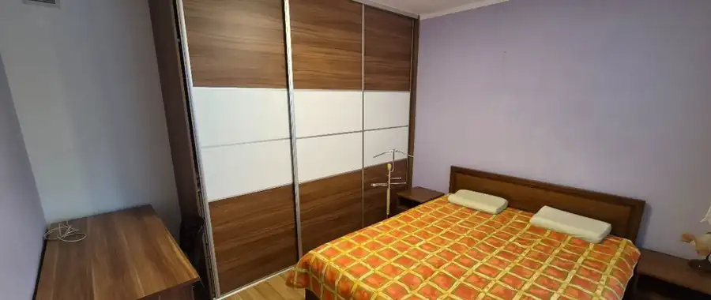
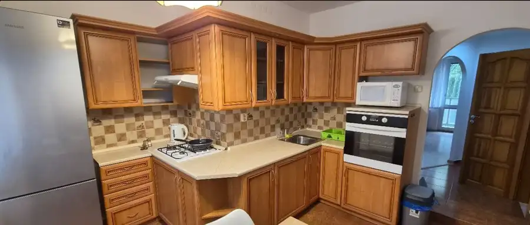
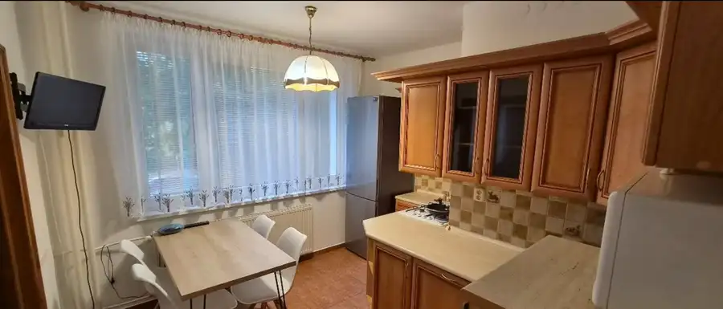
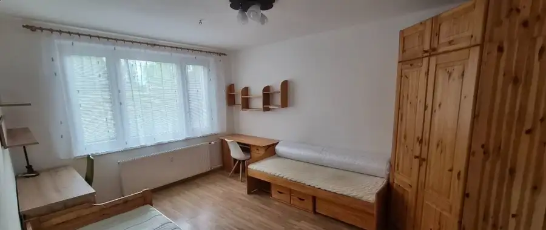
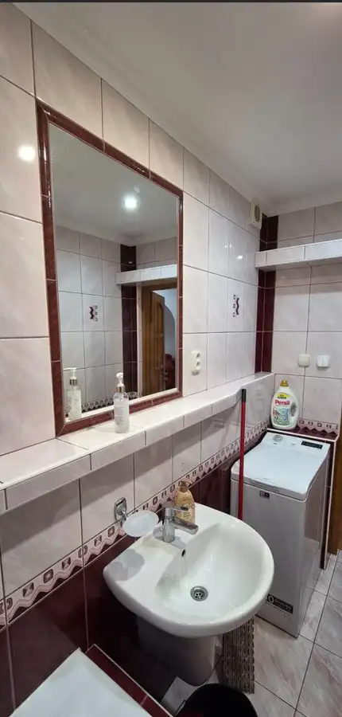
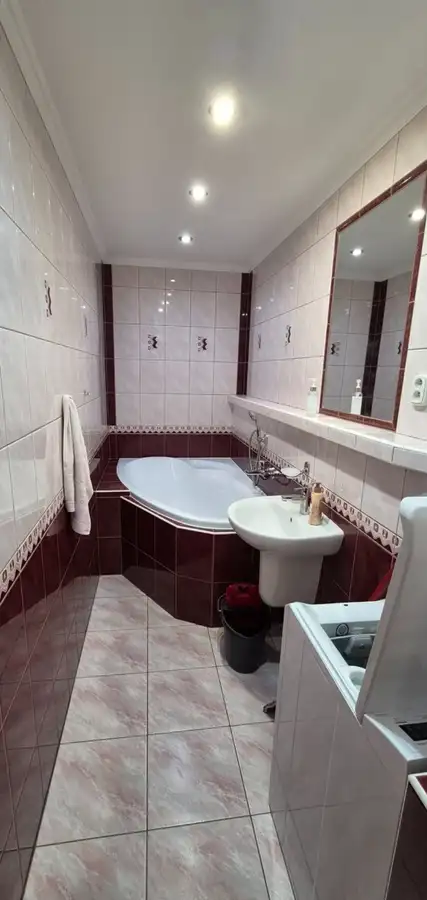

MDG | 3-izbový byt na prenájom - Nad jazerom
Nad jazerom, Košice






- Dispozícia2-izbový
- Plocha65 m²
- Poschodie1. z 12
- StavKompletná rekonštrukcia
O nehnuteľnosti
Realitná kancelária MDG Reality ponúka na prenájom kompletne zariadený 3-izbový byt na ulici Polárna 6 v mestskej časti Košice – Nad jazerom Byt s výmerou 65 m² sa nachádza na 1 poschodí v kompletne rekonštruovanom bytovom dome s novým výťahom a ponúka príjemné a pokojné bývanie vhodné najmä pre rodinu BYT-> Typ: 3-izbový byt-> Výmera: 65 m²-> Poschodie: 1-> Stav: staršia rekonštrukcia-> Zariadenie: kompletne zariadenýVÝHODY-> balkón-> kompletne zariadený byt-> vybavený spotrebičmi a nábytkom-> kompletne rekonštruovaný bytový dom-> nový výťah-> veľká vstavaná skriňa a dostatok úložného priestoru-> Antik televízia-> Antik 1 GB internet a WiFi-> energie, internet a 2× TV zahrnuté v cene nájmu-> tichá lokalita mimo hlavnej cesty-> vhodné pre rodinuDISPOZÍCIA-> Byt pozostáva zo vstupnej chodby, obývacej izby s balkónom, veľkej detskej izby, spálne, kuchyne, kúpeľne s vaňou a práčkou a samostatného WC-> Obývacia izba je vybavená sedacou súpravou a TV-> Spálňa disponuje manželskou posteľou-> Detská izba je kompletne zariadená vrátane postelí a pracovných stolov BYTOVÝ DOM-> Bytový dom prešiel kompletnou rekonštrukciou vrátane spoločných priestorov a disponuje novým výťahom LOKALITA-> Byt sa nachádza na ulici Polárna 6 v mestskej časti Košice – Nad jazerom, v tichej a príjemnej časti mimo hlavnej cesty-> V blízkosti sa nachádzajú obchody, školy, škôlky a ďalšia občianska vybavenosť-> Lokalita ponúka rýchlu a bezproblémovú dostupnosť do centra mesta električkovou dopravouCENA A PODMIENKY-> Nájomné vrátane energií, internetu a 2× TV: 850 € / mesiac-> Depozit: 1 000 €-> Rezervačný poplatok -> Doba nájmu: 1 rok a viac-> Byt je vhodný pre rodinu-> Bez domácich zvieratV prípade záujmu nás neváhajte kontaktovať, radi pre Vás zorganizujeme obhliadku-> Samuel Cibuľa-> cibula@mdgreality.sk-> +421 904 115 178
Parametre
- Cena vrátane energií
- Nie
- Druh
- 2 izbový byt
- Dátum zverejnenia
- 21. 09. 2026
- Energetický certifikát budovy
- nie je
- Podlažie
- 1
- Počet izieb / miestností
- 3
- Počet nadzemných podlaží
- 12
- Rok výstavby
- 1980
- Stav nehnuteľnosti
- Kompletná rekonštrukcia
- Typ
- Prenájom
- Typ konštrukcie
- Iná
- Umiestnenie
- Ďalšie nadzemné podlažie
- Zariadenie
- Zariadené kompletne
- Úžitková plocha
- 65 m²